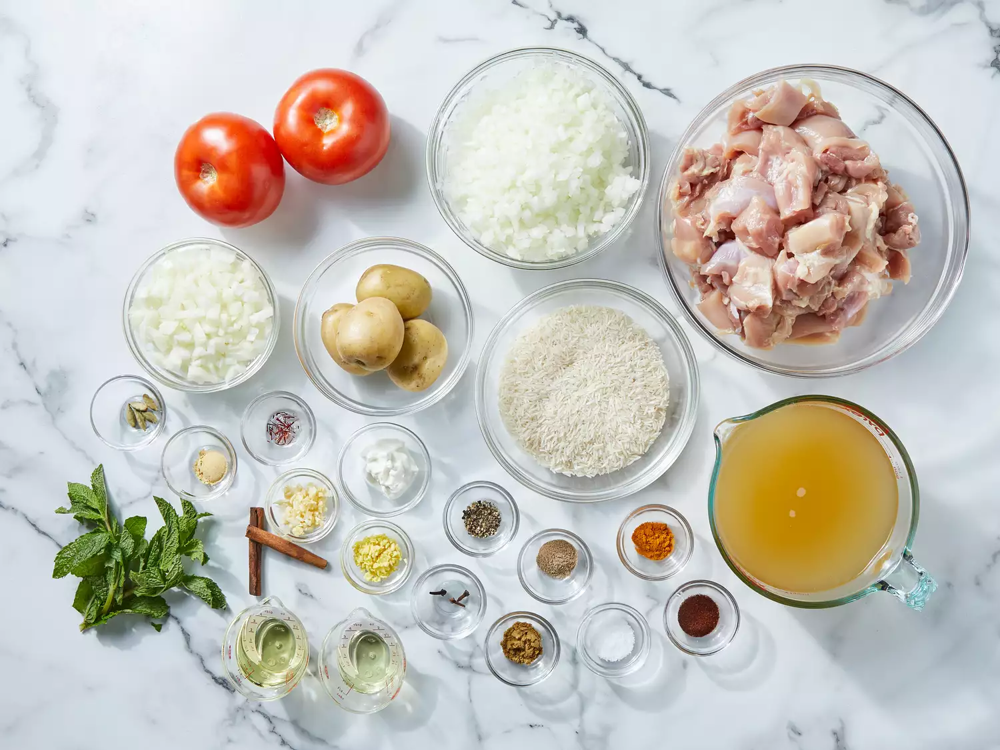

3 pounds boneless, skinless chicken pieces cut into chunks -
Rice:
1 pound basmati rice -
2 ½ tablespoons vegetable oil -
1 large onion, diced -
5 pods cardamom -
3 whole cloves -
1 (1 inch) piece cinnamon stick -
½ teaspoon ground ginger -
1 pinch powdered saffron -
4 cups chicken stock -
1 ½ teaspoons salt -
Directions:_
STEP NO.01-
Gather all ingredients.

STEP NO.02-
Heat 2 tablespoons of oil in a large skillet. Fry potatoes in hot oil until lightly browned, about 3 to 5 minutes. Remove to a paper towel-lined plate to drain; set aside.
STEP NO.03-
Add remaining 2 tablespoons of oil to the skillet. Add onions, garlic, and fresh ginger; cook and stir until onion is soft and golden. Add tomatoes, salt, cumin, chili powder, pepper, and turmeric; cook, stirring constantly, for 5 minutes.
STEP NO.04-
Stir in yogurt, mint, ground cardamom, and cinnamon stick. Cover and cook over low heat, stirring occasionally, until tomatoes are cooked to a pulp. It may be necessary to add a little hot water if mixture becomes too dry and starts to stick to the pan.
STEP NO.05-
Add chicken and stir well to coat. Cover and cook over very low heat until chicken is tender, 35 to 45 minutes. There should only be a little very thick gravy left when chicken is finished cooking. If necessary cook uncovered for a few minutes to reduce the gravy.
STEP NO.06-
Meanwhile, make the rice: Wash rice well and drain in a colander for at least 30 minutes.
STEP NO.07-
Heat oil in a large skillet. Add onion; cook and stir until golden. Add cardamom pods, cloves, cinnamon stick, ground ginger, and saffron; stir in rice until coated with spices.
STEP NO.08-
Heat stock and salt in a medium pot until hot; pour over rice and stir well.
STEP NO.09-
Add chicken mixture and potatoes; stir gently to combine. Bring to a boil.
STEP NO.10-
Reduce heat to very low, cover with a tight-fitting lid, and steam for 20 minutes without lifting the lid or stirring.
STEP NO.11-
Spoon biryani onto a warm serving dish.
RABRI KHEER:~
Ingredients:-
▢2 litre milk -
½ cup basmati rice, soaked 30 minutes -
pinch saffron -
½ cup condensed milk -
½ cup sugar -
½ tsp cardamom powder -
2 tbsp cashew, chopped -
Instructions:-
firstly, stir and get 2 litre milk to a rolling boil.
once the milk comes to a boil, start scrapping the sides to remove the cream.
transfer the soaked basmati rice to a mixer jar. make sure to soak ½ cup basmati rice for at least 30 minutes.
grind to coarse texture.
transfer the ground rice to the milk and mix well. make sure there are no lumps.
also, add pinch saffron and give a good mix.
continue to boil for 5 minutes or until the rice is cooked well.
further, add ½ cup condensed milk and mix well.
cook until the kheer thickens and turns creamy.
to prepare the caramelized sugar, in a pan take half cup of sugar.
stir on low flame until the sugar dissolves.
continue to cook until the sugar turns golden brown. caramelized sugar is ready.
pour the caramelized sugar over the kheer and mix well.
cook for 2 minutes until everything is well combined.
further, add ½ tsp cardamom powder and 2 tbsp cashew. mix well.
chill the kheer before serving.
finally, you can serve rabdi kheer topped with pheni and nuts.